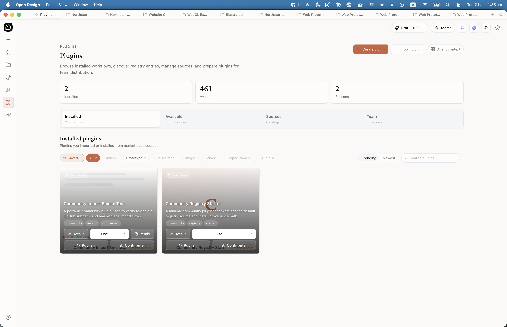
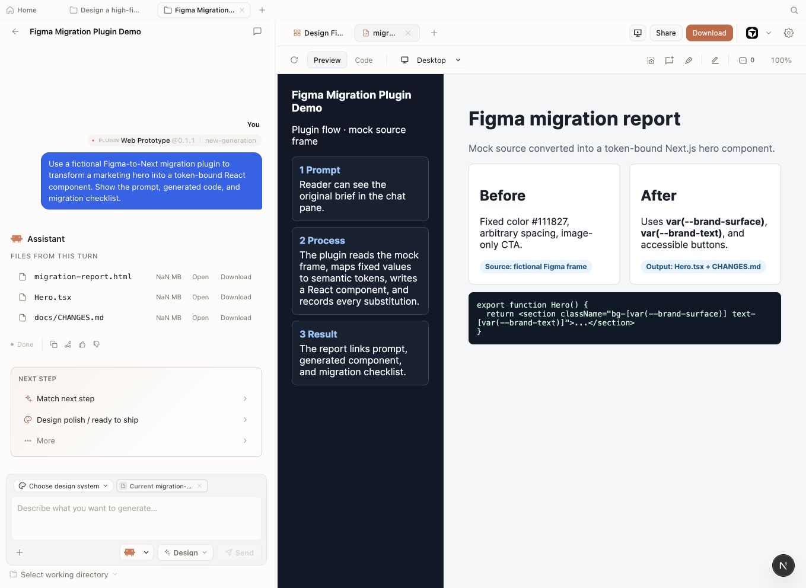
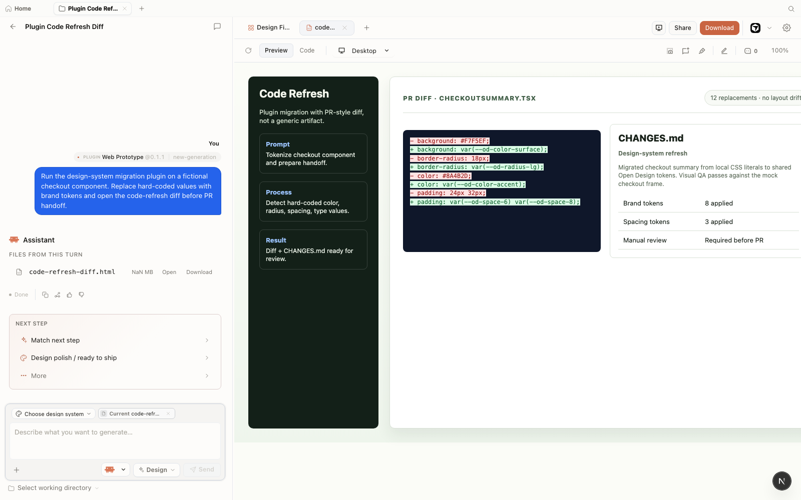

Chapter
09
The Plugin Ecosystem
261 official plugins, Figma migration, and code-refresh-to-brand
Plugins are how Open Design moves from generating new artifacts to transforming existing ones, and the migration and code-refresh scenarios are the design-engineer's highest-leverage tools.
9.1 The Plugin Taxonomy
What lives in plugins/_official/ and why the count matters less than the categories
Skills make things. Plugins do jobs. That is the mental model for this chapter. As of June 2026, Open Design ships 261 official plugins in plugins/_official/, organized into six distinct categories that cover everything from image templates to complete design-engineering scenarios. The number is notable, but the structure is what actually matters for your workflow.
The v0.8.0 release --- named "Plugin Everything" (May 22, 2026) --- made the plugin system the primary extensibility layer. Before that, skills and brand systems were the main surface. After it, almost every capability you can add to Open Design arrives as a plugin. The v0.9.0 release (June 2, 2026) consolidated that shift.
Here is how the 261 plugins break down:
| Category | Count | What it provides | Last verified |
|---|---|---|---|
| Scenario plugins | 11 | End-to-end workflows: Figma migration, code refresh, React/Next.js/Vue export, media generation, plugin authoring | June 2026 |
| Image templates | 45 | Branded static image outputs: social cards, banners, thumbnails, open-graph | June 2026 |
| Video templates | 50 | HyperFrames motion templates: intros, looping graphics, animated slides | June 2026 |
| Design systems | 142 | Brand systems wrapped as plugins; overlaps with the 150-system library but plugin-installable | June 2026 |
| UI atoms | 13 | Reusable component fragments: buttons, cards, modals, navbars | June 2026 |
| Reference examples | 140 | Worked artifact examples demonstrating skill and brand combinations; also used as test fixtures | June 2026 |
Note the discrepancy: the six category counts above sum to 401, but the README reports 261 total. The most likely explanation is that design-system plugins are counted separately from the featured "261" headline figure, which refers to scenario, template, atom, and example plugins only. The README language is "261 official plugins" with the design-system category noted separately as "142 design systems wrapped as plugins." Treat the 261 as the non-design-system total and the 142 design-system plugins as additive.
Plugin counts change with every release. The figures here reflect Open Design v0.9.0 (June 2, 2026). Before quoting them in a decision document, run ls plugins/_official/ | wc -l against the repo or check the README's version-stamped count.
The philosophy behind the taxonomy is "everything is a plugin" --- a phrase that emerged from the v0.8.0 release discussion on GitHub (discussion #1727, 1k+ engagement). In that model, even the core generation behaviors are backed by the od-default scenario plugin, which means you can override or extend default generation by swapping or layering plugins.

9.2 Installing and Running Plugins
The od mcp install pattern and plugin discovery path
Every plugin in plugins/_official/ is available immediately after Open Design is installed --- official plugins are bundled, not downloaded on demand. Third-party and custom plugins are added through the plugin discovery path.
The Discovery Path
Plugin discovery follows a priority-ordered scan across three locations. Understanding this order is critical when you add a custom plugin that shares a name with an official one:
# Skill/plugin discovery priority (first match wins)
1. ./.claude/skills/ -- project-private, highest priority
2. ./skills/ -- project-committed
3. ~/.claude/skills/ -- user-global
# Conflicts resolve to the highest-priority version.
# In dev mode, chokidar watches all paths for changes.
# In production, re-scan is triggered on SIGHUP.This means a plugin in ./.claude/skills/ overrides an official plugin of the same name. That is the correct mechanism for customizing official behavior without forking the repo.
Running a Plugin via the Agent
From within your agent CLI, invoke a plugin the same way you invoke a skill --- by name in a natural-language prompt. The agent resolves the name against the discovery path and hands execution to the plugin:
Use the landing-page-hero plugin with the Vercel brand system.
Headline: "Build Faster on Your Machine"
Subheading: "Local-first. Agent-native. Open source."Plugin File Structure
Every plugin --- official or custom --- is a directory containing a SKILL.md file plus optional assets/ and references/ subdirectories. The SKILL.md format is the base format for all skills and plugins in Open Design, adopted from the Claude Code skill convention (as of June 2026):
name: landing-page-hero
description: "Build a single-hero landing page with CTA"
triggers:
- "landing page"
- "hero page"
- "homepage"
od:
mode: prototype
preview:
type: html
design_system:
requires: true
inputs:
- name: headline
type: text
required: true
- name: subheading
type: textThe od: block is the Open Design extension to the base SKILL.md format. It defines the generation mode (prototype, image, video), the preview type, whether a design system is required, and the named inputs that the agent will collect from the user's prompt.
plugins/_official/landing-page-hero/
├── SKILL.md
├── assets/
│ └── hero-layout-reference.png
└── references/
└── examples.mdThe MCP Install Shorthand
For agent-side plugin setup (wiring the MCP server into your agent's config), the od mcp install command handles the plumbing. Plugin invocation itself does not require a separate install step once the MCP server is connected:
$ od mcp install claude-code
$ od mcp install cursor
$ od mcp install opencodeAfter any one of these, the agent can invoke every official plugin by name. Plugins do not need separate install commands; they are discovered automatically from the known paths.
9.3 Figma Migration
Moving a Figma or Pencil file to a React/Next.js/Vue component library
The od-figma-migration scenario plugin converts Figma and Pencil design files into React, Next.js, or Vue component libraries, with auto-layout structure preserved and a brand system applied. This is one of the two scenario plugins that, in my judgment, justify the entire adoption case for a design-engineering team. The other is covered in section 9.4.
What the Plugin Does
The migration scenario takes a Figma file export (or a Pencil .pen file), reads the component tree and auto-layout structure, and produces a component library in your target framework. The brand system you provide becomes the token layer --- the generated components reference brand variables rather than raw Figma color values.
| Scenario plugin | Input | Output |
|---|---|---|
od-default |
Any generation prompt | Artifact per the matched skill |
od-design-refine |
Existing artifact + refinement prompt | Refined artifact |
od-figma-migration |
Figma/Pencil file + target framework + brand system | React/Next.js/Vue component library |
od-code-migration |
Git repo URL + DESIGN.md path | PR with brand-compliant refactored code |
od-react-export |
Prototype artifact | React component bundle |
od-nextjs-export |
Prototype artifact | Next.js page + component bundle |
od-vue-export |
Prototype artifact | Vue SFC bundle |
od-media-generation |
Prompt + brand system | Image or video media artifact |
od-new-generation |
Generation prompt | New artifact (alternate to od-default) |
od-tune-collab |
Artifact + collaborative annotation | Tuned artifact reflecting annotations |
od-plugin-authoring |
Plugin spec description | Scaffolded plugin directory with SKILL.md |
Running the Figma Migration
Export your Figma file. From Figma, use File → Export → JSON or File → Export → Figma archive. If you are working in Pencil, the .pen file is already in the right format.
Open your agent CLI and connect it to Open Design. If you haven't done this, run od mcp install <your-agent> first (see Section 3.1).
Invoke the migration with a precise prompt. Specify the target framework and brand system explicitly --- the plugin will use the brand system to replace raw Figma token values with brand variables:
Migrate this Figma file to a Next.js component library
using the Linear brand system; preserve the auto-layout structure.Review the generated component files. The plugin produces a directory of .tsx components (for React/Next.js) or .vue single-file components, plus a tokens.ts or equivalent that maps brand variables to the design system. Check that auto-layout has converted correctly to flexbox or grid --- this is the most common point of manual adjustment.
Iterate with follow-up prompts. If a component has lost its layout fidelity, describe the problem and ask the plugin to correct it. The plugin maintains session context and can re-run the migration for specific components without re-migrating the whole file.
Complex Figma files with multiple component families do not migrate perfectly in one pass. I treat the first migration output as a ~70% draft: the structure and token wiring are correct, but spacing and interaction states need review. Set that expectation with your team before presenting migration results.

9.4 Refresh a Codebase to a Brand Spec
The od-code-migration plugin: turning a drift audit into a pull request
The od-code-migration scenario plugin takes a live git repository and a DESIGN.md brand specification, audits every source file for ad-hoc colors, non-brand spacing values, and component patterns that diverge from the spec, and produces a pull request with the corrected code. This is design-as-code as a maintenance capability, not a generation novelty.
Skills make things; plugins do jobs. This is the clearest example of that distinction. You are not asking Open Design to generate a new artifact. You are asking it to bring an existing codebase into compliance with a brand contract.
How the Code-Refresh Works
Git repo URL + DESIGN.md path
Scan source files for brand deviations: colors, spacing, type
Replace ad-hoc values with brand tokens
Pull request with diff and change log
od-code-migration code-refresh pipeline: repo in, brand-compliant PR out.Running the Code-Refresh
The code-refresh plugin modifies existing source files. Run it against a clean git state --- uncommitted work or untracked changes will be caught in the diff but create confusion. Branch first, review the diff before merging. An automated brand refactor is a strong first pass, not a merge-ready change.
Commit or stash all pending work in your target repository. The plugin expects a clean tree so its diff is unambiguous.
$ git checkout -b brand-refresh/od-run-2026-06
$ git status # confirm cleanMake sure your DESIGN.md is in the repo root or at a known path. The plugin reads it as the source-of-truth spec. If you don't have one yet, Chapter 05 covers authoring a house DESIGN.md.
Invoke the scenario with a precise prompt that names the repo and the spec file:
Refresh this React codebase to match our DESIGN.md:
replace ad-hoc colors and spacing with the brand tokens,
report what changed.The plugin scans src/components/*.tsx and related files, replaces ad-hoc values, and writes a docs/CHANGES.md that logs every substitution. It then opens a pull request (or stages a commit, depending on your git configuration).
# Pseudo-representation of the plugin's execution model
od-code-migration:
input:
- repo_url: "https://github.com/myorg/myapp"
- design_md_path: "./DESIGN.md"
output:
- pull_request: "docs/CHANGES.md"
- refactored_code: "src/components/*.tsx"Review the pull request diff file by file. Pay particular attention to: (a) color values replaced in CSS-in-JS that now reference a token that doesn't exist in the running theme; (b) spacing values that were intentionally non-standard for a specific layout; (c) any third-party component overrides the plugin may have touched.
Of the 261 plugins in the ecosystem, od-code-migration is the one that justifies adoption for an engineering org by itself. Skills and brand systems are excellent for generating new artifacts. But most teams have an existing codebase with years of accumulated brand drift --- hardcoded hex values, overrides on top of overrides, one component that uses the primary color and another that uses a slightly different hex that predates the design system. No amount of new generation fixes that. The code-refresh plugin does. Treat it as a strong first pass and review the diff carefully --- but that first pass will surface every deviation, and that list alone is worth the run.

CHANGES.md panel records the handoff summary before review. Mock-safe screenshot from Open Design v0.11.0, captured June 2026.9.5 Templates and UI Atoms
Image and video templates, reusable UI atoms, and reference examples
The three non-scenario plugin categories --- image templates (45), video templates (50), and UI atoms (13) --- cover the most-repeated, least-differentiated generation tasks. They are the production-line layer: high frequency, low variance, always on-brand.
Image Templates
Image templates produce static branded images for repeatable use cases: social cards, open-graph images, announcement banners, and thumbnail frames. Each template takes a brand system and a small set of named inputs (headline, subhead, background variant) and produces a sized, export-ready image artifact.
As of June 2026, Open Design includes 45 image templates covering social media formats (16:9, 1:1, 9:16), open-graph dimensions, and print-optimized sizes. The image generation backend routes through the configured image provider (see Section 7.4 for provider setup).
Video Templates
The 50 HyperFrames video templates are pre-authored HTML-to-MP4 motion sequences. Unlike generating a new motion artifact from scratch, video templates give you a tested layout and timing, with your brand system applied as the styling layer. They are the fastest path to a branded 15-second intro or a looping social video.
| Category | Count | Typical use case | Brand system required |
|---|---|---|---|
| Image templates | 45 | Social cards, open-graph images, announcement banners | Yes |
| Video templates | 50 | 15–30s intros, looping social graphics, animated slide reveals | Yes |
| UI atoms | 13 | Button sets, card components, modal shells, navigation bars | Recommended |
| Reference examples | 140 | Worked artifact examples; test fixtures; learning references | Bundled in example |
UI Atoms
The 13 UI atom plugins are reusable component fragments: buttons, cards, modals, navbars. They are smaller than full skills and intended for composition into larger artifacts. When your artifact prompt says "include a confirmation modal," the agent will resolve that to the modal atom plugin, which ensures the modal follows the brand system's component rules rather than improvising a layout.
Reference Examples
The 140 reference example plugins are worked artifact examples demonstrating specific skill-and-brand combinations. They serve two purposes: as learning references (see how an experienced prompt produces a given result) and as test fixtures (the Open Design team uses them to validate generation quality across releases).
9.6 Composing Plugins
Combining plugins with skills and brand systems in a single workflow
Skills make, plugins do. The full power of the ecosystem comes from combining them: a skill to shape the artifact's structure, a brand system to apply consistent visual language, and a plugin to transform or extend the result. That three-layer composition is what moves Open Design from a generation tool to a design-engineering workflow.
The Composition Pattern
Defines artifact structure and constraints
Applies visual language (tokens, voice, components)
Transforms or exports the result
Brand-compliant artifact or transformed codebase
A Composed Example
Here is a composed prompt that chains a skill, a brand system, and an export plugin in a single agent invocation:
Use the dashboard skill with the Linear brand system to build
an analytics overview with four KPI cards and a revenue chart.
Then export the result as a Next.js page using od-nextjs-export.The agent executes this in sequence: the dashboard skill shapes the layout, the Linear brand system applies the visual layer, the preview streams into the sandboxed iframe, and then od-nextjs-export serializes the artifact into a Next.js page component bundle.
Layering Design-System Plugins
The 142 design-system plugins can be layered on top of a base brand system. A common pattern is to apply a house brand system as the primary contract and then layer a product-specific design-system plugin for component-level overrides:
Generate a settings page using our house DESIGN.md as the base brand,
then apply the shadcn/ui design-system plugin for component styling.
Use the web-app skill.Most teams that adopt Open Design spend their first two weeks on skills and brand systems, and never look at the plugin ecosystem in depth. That's understandable --- the generation loop is immediately rewarding. But the scenario plugins are where the leverage shifts from "this is interesting" to "this changes how our team works." I'd recommend making the code-refresh plugin the first plugin every new team runs, even before exploring the template library. A single run against your production repo will tell you more about your brand-drift debt than any design audit.
Plugin Authoring
The od-plugin-authoring scenario plugin --- one of the 11 official scenarios --- scaffolds new plugins from a description. You describe what the plugin should do, and it produces a skeleton SKILL.md and directory structure. This is a meta-capability: the plugin ecosystem can generate new additions to itself.
Use od-plugin-authoring to scaffold a plugin that generates
email signature blocks in HTML, accepting a name, title,
and brand system as inputs.The output is a plugin directory you can place in ./.claude/skills/ to make it immediately available to your agent, at the highest priority in the discovery order.
When to Write a Custom Plugin
Write a custom plugin when:
You have a generation workflow you run more than twice a week. You need inputs the bundled skills don't accept. You want to enforce organization-specific constraints that aren't in any bundled brand system. You are exporting to a framework or format not covered by the official export plugins.
Don't write a custom plugin when:
A bundled skill or scenario plugin handles the job, even approximately. You are tempted to fork an official plugin to change one parameter --- override it via the discovery path instead. Your "custom" plugin is just a renamed copy of an official one.
Crystallize a successful run into a skill
When you iterate to a pattern that works --- prompt, skill invocation, and design system state aligned --- you should not reconstruct it from chat history on the next project. The Automations surface includes a Crystallize successful run into skill template that packages the run's prompt, skill invocation, and design-system attachment into a reusable skill recipe. Use it after a generation you would happily repeat. Save as template on the export menu covers project-level recycling; crystallize covers recipe-level recycling. The full Automations gallery is in Figure D.27 (Appendix D).
Next: Chapter 10 covers the MCP (Model Context Protocol) server that makes all of this agent-agnostic --- the infrastructure that lets any of 21 supported CLIs drive Open Design's skills, brand systems, and plugins through a single standard connection.